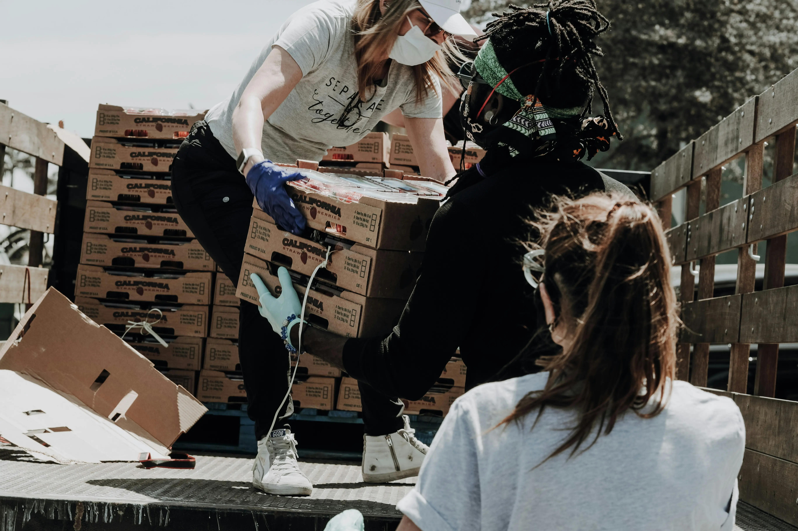
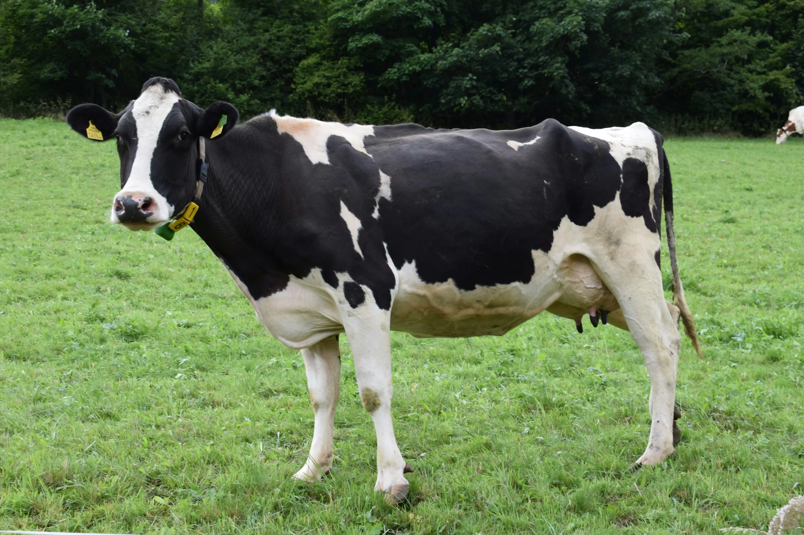

Zabezpečujeme komplexný a uzavretý cyklus poľnohospodárskej výroby tej najvyššej kvality.
Základom nášho úspechu je zdravá pôda. Zameriavame sa na pestovanie tradičných obilnín, olejnín a krmovín s minimálnym využitím chémie. Využívame moderné systémy precízneho poľnohospodárstva a dôsledne dbáme na rotáciu plodín.

Náš prístup k chovu zvierat je definovaný rešpektom a špičkovými životnými podmienkami (animal welfare). Veríme, že spokojnosť zvierat sa priamo odzrkadľuje na kvalite mlieka a mäsa.
Všetky krmivá si miešame sami výhradne z našej vlastnej rastlinnej produkcie, čím garantujeme úplnú absenciu geneticky modifikovaných zložiek (GMO free).
